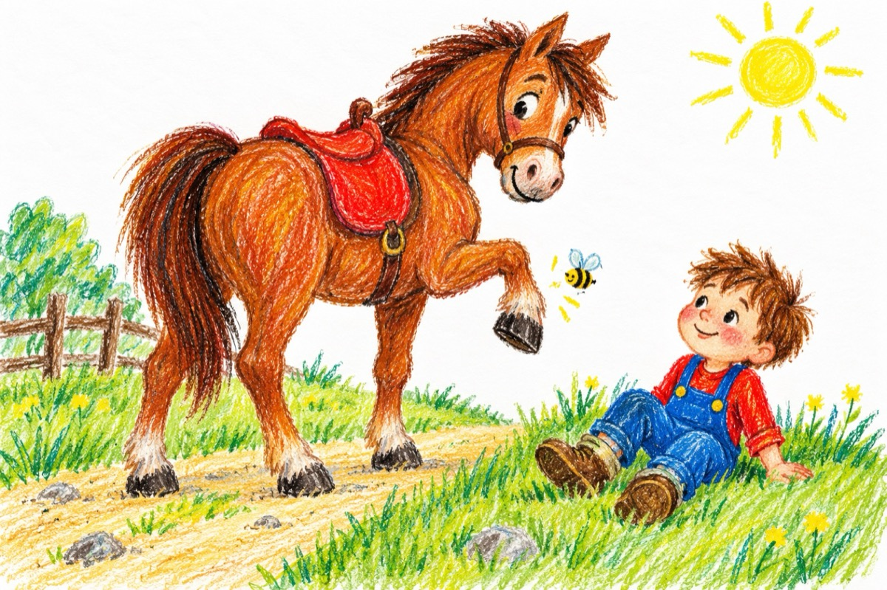

Pățania lui Gigel
Călăreț nevoie mare,
A primit un cal în dar.
Cum mergea pe el călare,
S-a-ntâlnit cu un bondar.
Ce avea un gând nebun,
Să-i trântească pe-amândoi,
Într-o margine de drum,
Declarându-le război.
Calul a pornit galop,
Cum Gigel îl îndemna.
Vrând să sară peste-un hop,
Gigel a căzut din șa.
Și bondarul din viteză,
S-a lovit de o copită.
Iară calul necheză
Bucuros
De victoria obținută.
Hei, ridică-te Gigel.
Ce te uițe la mine-așa?
Pregătește-te nițel,
Și aruncă-te în șa.
I-a zis calul bucuros,
Lui Gigel,
Ce-a ieșit victorios!
Vasile Groza